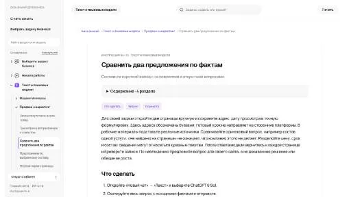

h
hiroscope.aiБизнес-исследования
Для «hiroscope.ai» сначала определите свою задачу и требуемый результат. Карточка относится к направлению «Бизнес-исследования».
Раздел «Бизнес-исследования»: варианты ИИ для этой задачи, описания возможностей и переходы к обзорам. Сравните несколько решений на одинаковом примере.
Передайте описания предложений двух поставщиков, чтобы сравнить их условия по единой структуре. Инструкция Молекулы показывает сравнение по фактам; источник каждого условия сохраняйте, а неизвестные расходы и особенности вынесите в вопросы перед выбором.
Сравни два предложения аренды оборудования по приложенным материалам. Нужны состав, срок, доставка и ограничения. Для каждого пункта укажи исходный документ, а неописанные условия вынеси в вопросы.

Для «hiroscope.ai» сначала определите свою задачу и требуемый результат. Карточка относится к направлению «Бизнес-исследования».
IdeaPicker ищет пользовательские проблемы в обсуждениях Reddit и на их основе создаёт идеи стартапов. Исходным материалом служит опыт участников, описанный в разговоре. Инструмент переносит найденное затруднение в предпринимательский контекст, предлагая возможное решение проблемы как основу для дальнейшего рассмотрения бизнес-замысла.
Для «InterWiz» сначала определите свою задачу и требуемый результат. Карточка относится к направлению «Бизнес-исследования».
Сравнивать «invue.ai» с другими инструментами раздела «Бизнес-исследования» удобнее на одинаковом исходном материале.
Для «Jex AI Global» сначала определите свою задачу и требуемый результат. Карточка относится к направлению «Бизнес-исследования».
«Jobzumi» помогает отбирать кандидатов для следующего этапа рассмотрения.
Сравнивать «LaunchIdea» с другими инструментами раздела «Бизнес-исследования» удобнее на одинаковом исходном материале.
Для «Micro SaaS Ideas» сначала определите свою задачу и требуемый результат. Карточка относится к направлению «Бизнес-исследования».
«Navida AI» представлен в разделе «Бизнес-исследования». При выборе проверьте нужную операцию и условия работы с результатом.
Сравнивать «Norn» с другими инструментами раздела «Бизнес-исследования» удобнее на одинаковом исходном материале.
«Pera Talent Assessment» представлен в разделе «Бизнес-исследования». При выборе проверьте нужную операцию и условия работы с результатом.
Сравнивать «RemoteJobsEU» с другими инструментами раздела «Бизнес-исследования» удобнее на одинаковом исходном материале.
Для «Reppls | AI Interview Agents» сначала определите свою задачу и требуемый результат. Карточка относится к направлению «Бизнес-исследования».
«RideAI» представлен в разделе «Бизнес-исследования». При выборе проверьте нужную операцию и условия работы с результатом.
Сравнивать «RightMatch AI» с другими инструментами раздела «Бизнес-исследования» удобнее на одинаковом исходном материале.
Для «scalenow AI» сначала определите свою задачу и требуемый результат. Карточка относится к направлению «Бизнес-исследования».
«ShortlistIQ» представлен в разделе «Бизнес-исследования». При выборе проверьте нужную операцию и условия работы с результатом.
Для «Signlz» сначала определите свою задачу и требуемый результат. Карточка относится к направлению «Бизнес-исследования».
«SMB Leads» помогает находить материалы по вопросу.
Для «SolveCube» сначала определите свою задачу и требуемый результат. Карточка относится к направлению «Бизнес-исследования».
Для «SourceGeek» сначала определите свою задачу и требуемый результат. Карточка относится к направлению «Бизнес-исследования».
Сравнивать «Spectate» с другими инструментами раздела «Бизнес-исследования» удобнее на одинаковом исходном материале.
Сравнивать «Stark.ai» с другими инструментами раздела «Бизнес-исследования» удобнее на одинаковом исходном материале.
«Talent Titan» представлен в разделе «Бизнес-исследования». При выборе проверьте нужную операцию и условия работы с результатом.
«TalentRecruit» помогает находить материалы по вопросу.
Для «Transmetrics» сначала определите свою задачу и требуемый результат. Карточка относится к направлению «Бизнес-исследования».
Сравнивать «unitQ» с другими инструментами раздела «Бизнес-исследования» удобнее на одинаковом исходном материале.
Сравнивать «Unless» с другими инструментами раздела «Бизнес-исследования» удобнее на одинаковом исходном материале.
«VelocitiPM» представлен в разделе «Бизнес-исследования». При выборе проверьте нужную операцию и условия работы с результатом.
Сравнивать «VeroCloud» с другими инструментами раздела «Бизнес-исследования» удобнее на одинаковом исходном материале.
Сравнивать «Wanderias» с другими инструментами раздела «Бизнес-исследования» удобнее на одинаковом исходном материале.
«Webb Fontaine» представлен в разделе «Бизнес-исследования». При выборе проверьте нужную операцию и условия работы с результатом.
Сравнивать «Yazero» с другими инструментами раздела «Бизнес-исследования» удобнее на одинаковом исходном материале.
Для «Your Innovation AI» сначала определите свою задачу и требуемый результат. Карточка относится к направлению «Бизнес-исследования».
Для «Your Personal AI» сначала определите свою задачу и требуемый результат. Карточка относится к направлению «Бизнес-исследования».
Сравнивать «Your Real Estate Investing AI Assistant» с другими инструментами раздела «Бизнес-исследования» удобнее на одинаковом исходном материале.
Для «ZipSmart» сначала определите свою задачу и требуемый результат. Карточка относится к направлению «Поиск информации».
«Accorata» представлен в разделе «Бизнес-исследования». При выборе проверьте нужную операцию и условия работы с результатом.
«AI Aggregator» представлен в разделе «Бизнес-исследования». При выборе проверьте нужную операцию и условия работы с результатом.
Сравнивать «AI Application Assistant» с другими инструментами раздела «Бизнес-исследования» удобнее на одинаковом исходном материале.
Сравнивать «Aixpert Recruit» с другими инструментами раздела «Бизнес-исследования» удобнее на одинаковом исходном материале.
«AttentionKart» представлен в разделе «Бизнес-исследования». При выборе проверьте нужную операцию и условия работы с результатом.
Сравнивать «Bitlauncher» с другими инструментами раздела «Бизнес-исследования» удобнее на одинаковом исходном материале.
Сравнивать «Botsnap.io» с другими инструментами раздела «Бизнес-исследования» удобнее на одинаковом исходном материале.
«Business Worth» представлен в разделе «Бизнес-исследования». При выборе проверьте нужную операцию и условия работы с результатом.
Для «Celebrity Agent» сначала определите свою задачу и требуемый результат. Карточка относится к направлению «Бизнес-исследования».
Для «ChatPLG» сначала определите свою задачу и требуемый результат. Карточка относится к направлению «Бизнес-исследования».
Для «Cloudgov.ai» сначала определите свою задачу и требуемый результат. Карточка относится к направлению «Бизнес-исследования».
Страница 4 из 13